Pengenalan Android
- 1. Apa itu Andoid?
- 2. Sejarah Android
- 3. Android 4.1 (Jelly Bean)
- 4. Android 4.4 (Kitkat)
Apa Itu Android???
- Android adalah sistem operasi berbasis Linux yang dirancang untuk perangkat seluler layar sentuh seperti smartphone dan tablet. Android didasarkan pada manipulasi langsung, menggunakan metode masukan sentuhan yang serupa dengan tindakan di dunia nyata, seperti menggesek, mengetuk, dan mencubit untuk memanipulasi obyek di layar.
Sejarah Android

- Andy Rubin
- Android, Inc. didirikan di Palo Alto, California, pada bulan Oktober 2003 oleh Andy Rubin, Rich Miner, Nick Sears, dan Chris White untuk mengembangkan "perangkat seluler pintar yang lebih sadar akan lokasi dan preferensi penggunanya"
Android Jelly Bean
Google mengumumkan Android 4.1 (Jelly Bean) dalam konferensi Google I/O pada tanggal 27 Juni 2012. Berdasarkan kernel Linux 3.0.31, Jelly Bean adalah pembaruan penting yang bertujuan untuk meningkatkan fungsi dan kinerja antarmuka pengguna (UI). Pembaruan ini diwujudkan dalam "Proyek Butter", perbaikan ini termasuk antisipasi sentuh, triple buffering, perpanjangan waktu vsync, dan peningkatan frame rate hingga 60 fps untuk menciptakan UI yang lebih halus.
Beberapa Fitur Unik di Android Jelly Bean
1. Google Now
- 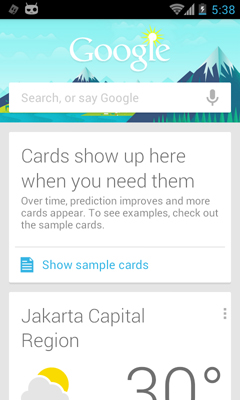
- Google Now akan memberikan kepada pengguna informasi dalam bentuk kartu-kartu informasi yang merepresentasikan beberapa jenis informasi yang berbeda-beda seperti cuaca, lokasi, skor olahraga dan sebagainya.
2. Face Unlock dengan Liveness Check
- 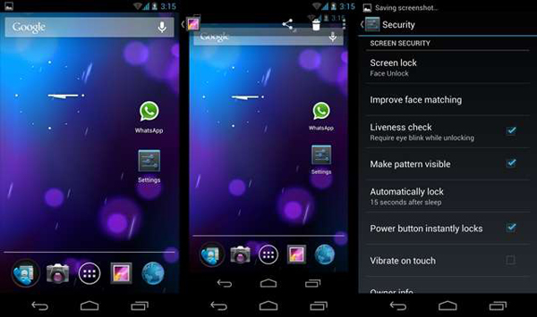
- Face Unlock pada Jelly Bean memang bukanlah hal yang baru, karena fitur ini telah diperkenalkan sebelumnya pada versi Ice Cream Sandwich. Namun begitu, Anda semua tentu telah tahu bahwa Face Unlock dapat dengan mudah dikelabui menggunakan foto. Oleh karena itu pada update Android yang terbaru ini, Google menambahkan fitur Liveness Check yang mengharuskan pengguna mengedipkan matanya untuk membuka kunci layar. Jika pengguna tidak mengedipkan mata, Jelly Bean akan mengharuskan Anda untuk memasukkan password atau pola sesuai dengan pengaturan yang Anda lakukan saat fitur Face Unlock diaktifkan.
Android Kitkat

merupakan versi Android terbaru 4.4, yang dapat digunakan untuk perangkat yang menggunakan RAM minimal 512 MB. Sehingga perangkat Android kelas Entry level pun akan dapat merasakan update terbaru dari OS Android terbaru dari Google ini.
Beberapa Fitur Baru di Android Kitkat
1. Enhanced Caller ID
- 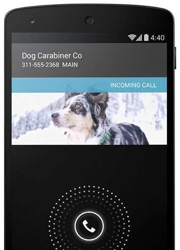
- Orang-orang memiliki kecenderungan untuk mengabaikan panggilan dari nomor telepon yang tidak dikenali. Nah, kalau kamu menerima panggilan yang nomornya tidak ada di dalam Kontak kamu, maka Android KitKat akan mencoba untuk mengambil informasi Caller ID dari daftar lokal dalam Google Maps. Fitur ini bisa sangat berguna bagi orang-orang yang memiliki keluarga dan teman-teman yang menelepon dari nomor tempat mereka bekerja. Misalnya gini, kamu dapat nomor dari 0274-6678xxx, nah Google bakal ngasih tau dimana lokasi dan tempat perusahaan si penelpon.
2. Ok Google
- 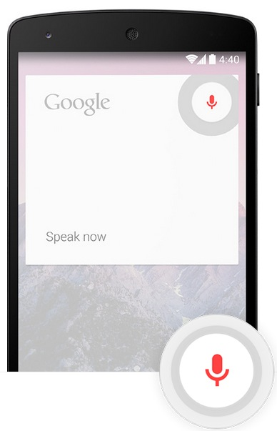
- Kamu tidak perlu lagi menyentuh layar untuk melakukan pencarian, mengirim teks, mencari arah atau memutar musik. Bila kamu berada di layar awal (home screen) atau memiliki aplikasi Google Now, kamu cukup mengatakan “Ok Google” diikuti dengan perintah untuk melakukan salah satu dari tugas-tugas yang kamu inginkan. Misal nih, kamu dapat mengatakan perintah seperti “Ok Google, where is the closest McDonalds.” atau “Ok Google, play Rihanna.”
Tips & Trik Android
- 1. Rooting
- 2. Custom Roms
- 3. Flashing
Rooting
1. Pengertian Rooting dan Fungsinya
- Rooting
- Root adalah suatu akun sistem yang memiliki kekuasaan mutlak guna mengakses dan mengeksekusi semua berkas, perintah, dan sistem dalam sistem operasi berbasis Linux (termasuk Android). Intinya, 'root' memiliki akses tanpa batas untuk mengubah, menghapus, menambah, bahkan merusak semua yang ada di dalam sistem Android. Fungsi untuk melakukan root pada perangkat berbasis Android adalah untuk memberi hak penuh kepada pengguna Android untuk dapat masuk ke dalam sistem Android.
Efek Negatif dari Rooting
1. Garansi yang ada dapat hilang.
- Jika Android Anda sudah di root, maka garansi yang ada di smartphone Android akan hilang.Sebenarnya ada cara untuk mencegah hilangnya garansi yang telah di – root, yaitu dengan membackup semua aplikasi bawaan vendor kemudian me – unroot android Anda setelah semua aplikasi bawaan telah dikembalikan (di backup) ke smartphone Anda.
2. Ponsel berperilaku tidak normal.
- Memang mengkonfigurasi hardware android secara manual dapat meningkatkan kinerja dari Android Anda secara maksimal, tapi itu jika dilakukan secara benar! jika tidak, maka Android Anda akan sering mengalami gangguan, diantaranya: ponsel sering mati dan reboot ulang sendiri, sering ‘hang’ di saat menjalankan aplikasi tertentu, kinerja hardware malah semakin buruk, dan yang paling parah adalah terjadinya bootloop, yaitu sistem Android Anda tidak mau di boot! Jika ponsel Anda tidak mau boot atau mulai berperilaku tidak normal, cara terbaik menanganinya adalah melakukan flashing pada Android Anda. Untuk flashing Android, mungkin caranya berbeda pada perangkat yang satu dengan perangkat yang lain.
3. Overheating pada ponsel.
- Rooting memang dapat membuat ponsel Anda bekerja lebih cepat dari biasanya. Namun, kekurangannya jika Anda membuat ponsel Anda memacu seluruh kemampuan hardware-nya untuk bekerja secara maksimal adalah terjadinya overheating(panas yang berlebih pada ponsel Anda).
- Kerugian paling besar dari rooting mungkin adalah Anda akan kesulitan dalam melakukan recovery pada file-file yang telah dihapus di memori internal ponsel. Dan itupun sangat jarang dilakukan oleh pengguna Android(menyimpan file-file penting di memori internal).
Cara Root Semua Jenis SmartPhone Android Menggunakan UnlockRoot
- 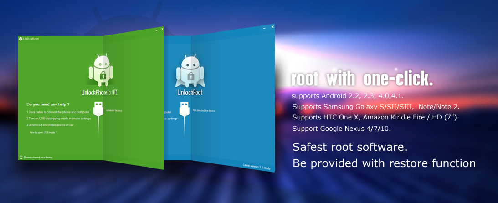
- Langkah - langkahnya sebagai berikut :
- 1. Download Aplikasi UnlockRoot
- 2. Pastikan anda telah menginstall Driver USB Device anda di PC sebelum menggunakan Software Unlockroot.
- 3. Pastikan anda mendisable USB Debuging yang ada di Smartphone Android anda, dengan Cara masuk Settings > Applications > Development > Centang USB Debuging
- 4. Sambungkan SmartPhone Android anda ke PC
- 5. Jalankan "UnlockRoot.Exe" dan tunggu sampai UnlockRoot mendeteksi SmartPhone anda.
- 6. Pilih Nama SmartPhone anda saat, Unlockroot medeteksi Smartphone anda.
- 7. Klik Tombol "Root" untuk memulai Root.
- 8. Tunggu Sampai Proses Rooting selesai, di Tengah Proses Rooting biasanya anda akan di berikan Pilihan untuk menginstall Aplikasi "PowerSaver App" (Optional)
- 9. Anda mendapatkan Pesan " your device has been successfully rooted"
- 10. Unlockboot akan memberikan Pesan untuk melakukan Reboot Smartphone anda. Silahkan Rebbot untuk menyelesaikan Proses Rooting.
Sekarang smartphone android anda sudah di ROOT, dan Mendapatkan Hak Sebagai SuperUser di Ponsel android anda. anda bisa mengakses File System menambah, dan menghapus Aplikasi Bawaan dari Vendor.
Apa itu Customs ROMs?
- Custom Roms adalah file system firmware perangkat baik berupa handphone, tablet maupun PC yang OS sudah di kostumisasi oleh developer pihak ke 3 dengan tujuan tertentu dan dengan mengubah firmware resmi-asli (Stock ROM ) bawaan vendor perangkat tersebut.
- Tidak terkecuali pada perangkat berbasis android, firmware pada android juga dapat dimodifikasi, oleh sebab itu dinamakan dengan android mod (android modification) atau yang lebih dikenal dengan sebutan custom ROM. Sebenarnya ROM sendiri artinya adalah Read Only Memory, tetapi ketika digunakan dalam komunitas modding android maka artinya menjadi custom OS image yang di install kedalam area ROM didalam HP.
Bagaimana cara mendapatkan custom ROMs?
- Sebelum kita mendapatkan/meng-install Custom ROMS terlebih dahulu anda memastikan bahwa anda memiliki beberapa hal berikut ini:
- File Custom ROM.
- Download File Custom Recovery di XDA, biasanya berbentuk RAR atau ZIP, setelah itu masuk kedalam Default Recovery dan Install Custom Recovery dari Default Recovery
Langkah - Langkah untuk melakukan Instalasi Custom ROMS pada Device Android anda:
- 1.Simpan file Custom ROM (dan jika ada bahan-bahan lain yang dibutuhkan) didalam SDCard milik anda (Bukan di External SDCard)
- 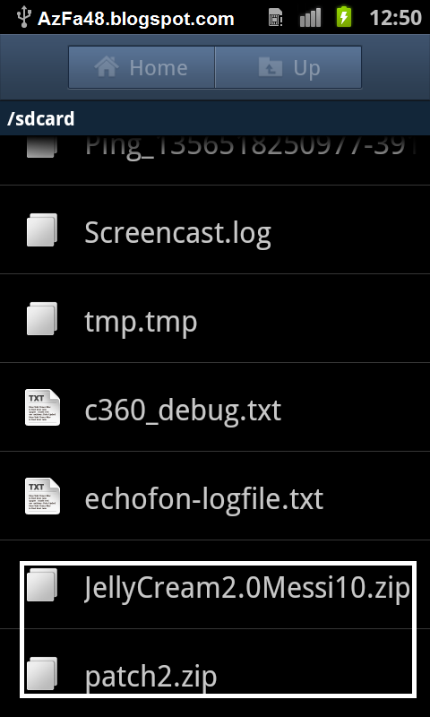
- 2.Jika seluruh file sudah siap dan lengkap, silahkan matikan Device Android anda
- 3.Kemudian, silahkan masuk kedalam Custom Recovery milik anda (Tekan tombol Volume Up + Power + Home secara bersamaan)
- 4.Lakukan Factory Reset - Pilih Yes
- 5.Pilih "Install zip from SDCard" → choose zip from SDCard. Kemudian anda akan mendapatkan beberapa File dan Folder yang ada didalam SDCard anda
- 6.Pilih Custom ROM yang sudah anda miliki - Pilih Yes
- 7.Wipe cache dan dalvik cache - Pilih Yes
- 8.Reboot,Tunggu sebentar. Biasanya Reboot awal memakan waktu sekitar 3 sampai 4 menit untuk memulai dari awal. kalau Reboot-nya memakan waktu hampir seharian penuh, itu mungkin aja Bootloop, silahkan lakukan Step 3 kembali atau Install kembali Stock ROM
- 9.Kini anda sudah bisa menikmati Custom ROM yang ingin anda gunakan
Flashing
- 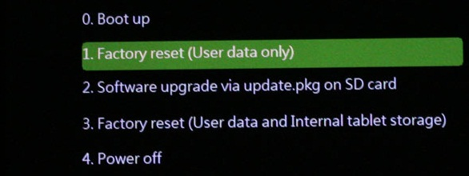
- Flashing adalah menginstal ulang Sistem Operasi (OS) yang berguna untuk memperbaiki software jika ada masalah dan bisa juga untuk Downgrade atau Upgrade OS.
Langkah Flashing ANDROID VIA ODIN
- 1. Pertama-tama kalian siapkan dulu odin agar android kalian bisa di flash.
- 2. Matikan android mu dan masuk ke dalam Download Mode dengan cara Vol Down + Home Key + Power(lepaskan tombol power setelah 3 detik) tekan terus Vol Down + Home Key sampai masuk Download Mode, lalu tekan tombol Vol Up dan colok kabel data dari PC ke android kalian. Tunggu sampai Odin mengenali android anda.
- 3. Pada menu odin kalian klik PDA, lalu pilih firmware yang ber-extensi md5 nya yang telah di extract, lalu open. seperti gambar dibawah ini:
- 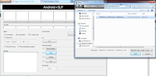
- 4. Tunggu sampai proses installasi firmware selesai. Jika pada kolom port pertama bertuliskan PASS! berarti proses selesai dan android mu akan reboot secara otomatis. Jika android mu sudah masuk ke sistem operasi nya cabut kabel.
- Touchdown, android mu sekarang sudah menjadi Official Firmware yang asli
Masalah di Android
- 1. BootLoop
- 2. Android Freeze
Apa itu BootLoop?
- Bootloop adalah proses booting yang terjadi terus menerus (berulang - ulang) sehingga seolah - olah perangkat tersebut "tersangkut" di proses booting dan tidak mampu menyelesaikan proses booting nya (tidak bisa startup).
Cara mengatasi BootLoop
- Ada 2 cara untuk mengatasi Bootloop;
- 1. Wipe data & Cahe dari Recovery
- 2. Flashing Firmware(seperti di slide sebelumnya)
Wipe data & Cahe dari Recovery
- 1. Matikan Device Android anda
- 2. Masuk ke Recovery mode, Biasanya dengan menggunakan kombinasi tombol yang ada pada device. Cth : Galaxy mini, untuk masuk recovery mode galaxy mini dengan memencet tombol Tengah + Power. Untuk device lain bisa googling cara masuk Recoverynya.
- 3. Setelah masuk Recovery Mode pilih Wipe Data - Yes setelah itu Wipe Cache - Yes dan yang terakhir Reboot system now
- Nah tunggu sampai device anda Restart dan lihat hasilnya.
Android Freeze
- Android Freeze adalah keadaan dimana perangkat android anda tiba - tiba menjadi hang, atau suka mati sendiri tanpa kita mematikannya secara manual.
Cara Menyembuhkan Android dari Freeze
- 1. Menutup Aplikasi yang Sedang Berjalan
- Masuk ke Home> Menu> Settings> Applications> Manage Applications> kemudian tekan tab RUNNING. Dari sana Anda akan melihat semua aplikasi yang berjalan di latar belakang (background) perangkat. anda juga bisa memilih aplikasi tersebut (messaging, email, games, dll), maka Anda akan dapat menghapus cache (Clear Cache) dan menghentikan paksa (Force Stop) atau cukup menghentikannya saja (Stop). Dengan melakukan ini, akan dapat meringankan kinerja perangkat Anda dan mencegah masalah mati tiba-tiba atau hang.
- 2. Menghapus Cache Aplikasi Pihak Ketiga
- Masuk ke Home> Menu> Settings> Applications> Manage Applications> Tekan tombol pihak ke-3 (3rd Party) atau Telah diunduh (Downloaded). Ini semua adalah aplikasi-aplikasi yang telah Anda unduh dari Play Store. Pilih aplikasi dan dari sini Anda juga bisa menghapus cache (Clear Cache) dan menghentikan paksa (Force Stop) atau cukup menghentikannya saja (Stop).
- 3. Menghapus Pengaturan Privasi Browser
- Masuk ke Home> Application> WEB / Browser> Menu> More> Settings> Geser ke Privasi> Clear Cache, Cookies, Clear History. Cara ini dapat menambah ruang kosong pada perangkat Anda. Lalu akhiri dengan menyalakan ulang (Soft Reset) (perangkat nyala, copot baterai selama 1 menit atau setidaknya hingga saat Anda ingin menyalakan perangkat Anda kembali) cara ini sama dengan menyalakan ulang komputer.
Benchmark
- 1. Apa itu Benchmark?
- 2. Aplikasi Benchmark
Apa itu Benchmark?
- 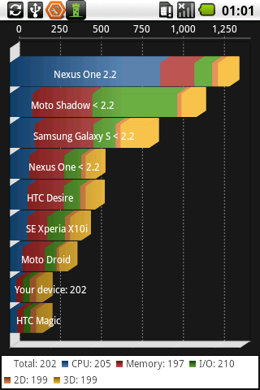
- Benchmark adalah aktivitas pengukuran/pembandingan beberapa macam produk hardware yang memiliki fungsi sama untuk mengetahui tingkatan kinerjanya. Tujuan utamanya adalah untuk mengetahui seberapa baik hardware yang dimiliki oleh sebuah smartphone atau tablet. Walaupun begitu, hasil benchmark belum tentu menandakan kencang tidaknya performa keseluruhan. Hal tersebut tergantung dari tingkat optimalisasi produsen dari segi software terhadap hardware-nya.
Beberapa contoh aplikasi Benchmark
1. Antutu Benchmark
- 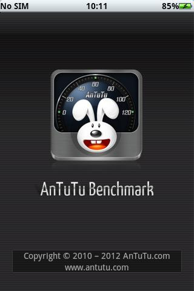
- Aplikasi Antutu Benchmark mengukur kinerja secara komprehensif lewat pengujian "Memory Performance", "CPU Integer Performance","CPU Floating point Performance","2D 3D Graphics Performance", "SD card reading/writing speed", dan "Database I/O". Hasilnya adalah skor komplit dari hampir semua aspek perangkat Android Anda. Dari semua benchmark, Antutu memberikan skor yang yang paling konsisten dan menyeluruh. Apabila Anda hanya sempat mencoba satu benchmark, aplikasi ini adalah pilihannya.
2. Quadrant 2.0
- Benchmark pada Quadrant 2.0 meliputi pengukuran kecepatan CPU, I/O, dan grafis 3D. Aplikasi ini sudah beredar selama bertahun-tahun dan menjadi software benchmark standar untuk Android.
Beberapa Aplikasi Android yang Kami Sarankan
- 1. Aplikasi Utility yang Kami Sarankan
- 2. Aplikasi Game yang Kami Sarankan
- 3. Aplikasi Media Player yang Kami Sarankan
Aplikasi Utility yang Kami Sarankan
1. AppGarden Lite

- tampilannya terlihat tanggal dan appGarden Line juga ringan,kontainer mundur,kompatibel dengan puluhan utility yang berguna,dari grafik konversi ke scanner bercode ke generator password dan anda juga dapat membuat petunjuk utilitas favorit anda untuk akses cepat.contoh : stopwatch , kalkulator mata uang
2. Auto Memory Manager

- dimana ketika android anda perlu meningkatkan kinerja,salah satu cara yang paling jelas adalah untuk meng-upgrade atau mengelola memori.Dan Auto Memory Manager adalah sebuah aplikasi yang didukung iklan yang memberikan informasi rinci memori dan memungkinkan anda menetapkan prioritas memori pada aplikasi .Ini juga perlu men-download ketika ponsel android anda mulai merasa lemash
3. History Eraser Pro

- untuk memudahkan untuk menghapus sampah dari telepon anda,aplikasi ini menuntun anda memalui segala macam data,dari pesan teks ke browser history ke file cache.
Aplikasi Game yang Kami Sarankan
- 1. The Match : Striker Soccer G11
- 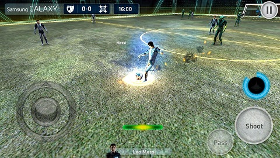
- Game ini adalah game terbaru keluaran dari Samsung Galaxy 11. Game ini adalah game sepakbola melawan alien dengan 11 pemain sepakbola terbaik dari bumi. Game ini memerlukan Android versi 2.3.3 dan kapasitas 70 MB. Tertarik? Ayo coba game baru yang menantang ini.
- 2. Cut The Rope 2
- Game ini adalah game yang akan mengasah otak anda untuk menemukan cara agar si kodok dapat memakan bola yang ada. Game ini memerlukan Android versi 2.2.
- 3. Clash of Clans
- Clan Wars!! Game ini adalah salah satu game terlaris saat ini. Game ini dimainkan secara online. Anda dapat membangun suatu desa milik anda untuk anda kembangkan dan dapat juga menyerang lawan dari desa yang lain. Game ini memerlukan Android versi 4.0.3 dan kapasitas 50 MB.
- 4. Hay Day
- Game ini akan membuat anda serasa mempunyai peternakan dan pertanian sendiri. Game ini dimainkan secara online. Game ini memerlukan Android versi 4.0.3 dan kapasitas 59 MB. Berminat mengembangkan peternakan sendiri? Ayo segera download aplikasi ini di Google Play.
Aplikasi Media Player yang Kami Sarankan
Jenis-jenis layar pada Smartphone Android
- 1. IPS LCD
- 2. Amoled
- 3. TFT
- 1. Layar IPS LCD
- Jenis layar IPS LCD ini banyak kita jumpai dalam smartphone kelas menengah ketas, namun sebelumnya perlu kita pahami tentang apa itu jenis layar IPS LCD. IPS (In Plane Swtiching) merupakan suatu panel teknologi LCD yang mampu menampilkan banyak perbedaan ketika dipandang mata secara normal. Layar dengan teknologi IPS ini menawarkan hasil gambar yang sangat bagus dan cocok untuk fotografi. Sedangkan kelemahan dari layar yang menggunakan teknologi IPS LCD ini adalah konsumsi daya yang tergolong besar dan juga kecerahannya tidak bisa tampil sempurna.
- 2. Layar Amoled
- Kita sering mendengar nama layar AMOLED untuk smartphone terbaru, apa itu layar AMOLED?? AMOLED (Active Matrix Organic Light Emitting Diode) adalah jenis layar yang menggunakan teknologi OLED (Organic Light Emitting Diode). Sedang OLED sendiri merupakan sebuah benda padat yang memiliki filmyang sangat tipis yang mengandung molekul organik dan mampu menghasilkan cahaya apabila mendapat aliran listrik. Teknologi OLED memiliki ketajaman layar yang tergolong tinggi namun memiliki daya yang tergolong rendah. Dengan AMOLED merupakan wujud transformasi dari OLED biasa yang mempu merubah setiap pixel secara langsung dan sangat efisien.
- 3. Layar TFT
- TFT merupakan kepanjangan dari Thin Film Transistor yang merupakan jenis layar yang menggunakan teknologi LCD. Layar dengan menggunakan jenis layar FTF ini mampu memberikan resolusi yang cukup baik dan layar TFT juga mampu menampilkan gambar yang mengusung berjuta warna. Layar dengan jenis TFT ini tergolong mahal dan juga mampu menyedot daya yang sangat besar. Kelebihan dan kelemahan dari Layar yang menggunakan teknologi TFT adalah memiliki tampilan layar yang tergolong tajam dan juga jenih serta mempu menerima respon sentuhan yang sangat cepat. Sedang kekurangannya adalah boros baterai.
Tips Memilih Android
- Berikut beberapa hal yang harus anda perhatikan saat memilih ponsel android menurut kami :
1. Ukuran layar
- Kemampuan android untuk menampilkan situs dengan tampilan desktop, dan dengan dukungan dari web browser seperti chrome, firefox, maupun opera, membuat ukuran layar haruslah menjadi pertimbangan demi kenyamanan saat berseluncur menggunakan perangkat android
2. Resolusi layar
- Jangan tertipu dengan ukuran layar besar namun mempunyai resolusi pas-pasan, minimum resolusi layar yang harus dimiliki sebuah ponsel android adalah sebesar 480 x 320 pixel. Perhatikan juga ketajaman gambar.
3. Sensitifitas layar
- Sensitifitas layar sentuh capacitive yang dimiliki ponsel android juga harus menjadi pertimbangan, anda tentu akan dibuat kesal dengan ponsel yang lambat menangkap perintah melalui sentuhan
3. Fitur touch screen
- Pilihlah ponsel android dengan layar multitouch, artinya dapat merespon sentuhan dengan dua jari bahkan lebih, ini agar anda lebih leluasa mengoperasikan ponsel tanpa batasan
4. OS
- Minimum OS yang paling banyak digunakan saat ini adalah android 4.0 ICS (Ice Cream Sandwich), jika memiliki budget lebih anda dapat pula memilih android dengan OS 4.1 Jellybean.
5. Processor
- Kecepatan processor berbanding lurus dengan kecepatan kinerja android, pilih android dengan spek processor minimal 1Ghz untuk kepuasan anda saat menggunakan ponsel android
6. Jenis processor
- Sebaiknya anda mengenal terlebih dahulu jenis processor yang digunakan oleh ponsel android yang akan anda beli. Ponsel android low end paling banyak menggunakan processor mediatek, yang memiliki kualitas dan kinerja baik namun boros konsumsi tenaga, ada juga yang menggunakan qualcomm yang memiliki keunggulan lebih dalam graffik dan performa. Diatasnya, adalah processor nvidia tegra dan exynos yang memiliki kelebihan dalam hal konsumsi daya nya yang irit.
7. RAM
- Banyak sekali pengguna android yang membuka program semantara program lain masih berjalan di background, hal ini tentunya berpengaruh pada kapasitas RAM, sebaiknya pilih ponsel android yang memiliki kapasitas RAM minimal 512MB, namun untuk anda yang hobi game, RAM 1GB haruslah menjadi spesifikasi minimal pilihan anda.
8. Memory internal
- Kapasitas memory internal juga harus menjadi perhatian, beberapa aplikasi android menggunakan memory internal untuk penyimpanan, tentunya akan menjadi masalah jika memory internal ponsel pas-pasan.
9. Kamera
- Apa jadinya sebuah ponsel tanpa kamera? beberapa ponsel android dengan harga terjangkau bahkan sudah menyertakan dual kamera pada ponsel nya, pilihlah ponsel dengan resolusi kamera yang baik terutama untuk kamu yang senang eksis di jejaring sosial semisal facebook.
10. Konektifitas
- Selain game, keunggulan yang dimiliki oleh ponsel android tentunya adalah konektifitas internet, namun inipun tergantung pada jenis jaringan mana yang digunakan oleh ponsel tersebut.
11. Merk
- Biasanya merk sama dengan harga, namun berbalik dengan spesifikasi. Maksudnya, beberapa ponsel dengan merk lokal menghadirkan ponsel murah dengan spesifikasi mumpuni yang hanya dimiliki oleh ponsel keluaran vendor terkenal dengan harga yang lebih mahal.
12. Harga
- Murah belum tentu murahan, sebaiknya fitur dan spesifikasi menjadi pertimbangan pertama anda dibandingkan harga dari ponsel tersebut.
13. Desain
- Desain dan warna juga haruslah menjadi pertimbangan anda, warna yang sesuai selera dan desain yang nyaman digenggam akan membuat anda tidak mudah bosan dengan ponsel android yang anda beli.
- Cermat memilih android sesuai kebutuhan
Tips Agar Baterai Perangkat Android Anda Awet dan Tahan Lama
- Berikut ini adalah Tips Merawat Baterai perangkat Android Agar Awet dan Tahan Lama menurut kami :
- 1. Hindari baterai/smartphone dari suhu ekstrim atau suhu tinggi. Salah satu hal yang sering terjadi adalah baterai/smartphone ditinggalkan di mobil/dashboard. Suhu tinggi >40 C akan menurunkan performa baterai secara signifikan. Suhu ekstrim yang terlalu tinggi bisa menyebabkan thermal runaway, reaksi kimia lanjutan karena tingginya suhu baterai dan menyebabkan baterai Lithium meleleh/meledak.
- 2. Untuk baterai smartphone yang bisa dilepas, perhatikan saat membawa baterai cadangan jangan sampai kutub-kutub baterai terhubung. Hal ini bisa terjadi jika baterai dibawa di kantong dan disimpan bersama dengan uang koin, klip, atau bahan metal lainnya. Hal ini berpotensi menyebabkan hubungan pendek.
Tips Agar perangkat Android Tidak Lelet atau Lemot
- Berikut ini adalah tips agar perangkat Android Tidak Lelet menurut kami :
- 1. Gunakan Task Kill Manager
- Sama halnya pada komputer, terkadang di ponsel Android terdapat aplikasi yang lag/hang, untuk “membunuh” aplikasi yang sedang berjalan, Anda membutuhkan aplikasi Task Kill Manager.
- 2. Kurangi aplikasi yang tidak terlalu dibutuhkan pada hp android.
- Biasanya terlalu banyak aplikasi yang diinstal akan menyebabkan boot semakin lama serta kinerja dari hp juga akan menurun atau kurang optimal.
- 3. Hapus Cache
- Apabila browsing, atau chating sebenarnya ada cache yang akan selalu bertambah, dan semakin banyak cache yang menumpuk dapat menyebabkan android anda jadi lebih lemot, solusi untuk menghapus cache yang ada di android anda dapat menggunakan aplikasi-aplikasi yang bertugas menghapus cache.
- 4. Memori Internal penuh.
- Terlalu banyak menginsatall aplikasi tentu akan membuat memori Internal yang ada di ponsel anda semakin penuh, solusinya silahkan beberapa aplikasi pada memori external saja, Untuk sebagian HP android mungkin tidak dapat dengan mudah memindahkan aplikasi pada memory external, solusi untuk kamu dapat lakukan root dulu ponsel android kamu.
- 5. Jangan Menggunakan Theme Yang Berat
- Mengunakan Theme yang berat akan biasanya juga dapat membuat RAM banyak termakan, serta juga dapat mempercepat habisnya baterai.
Alasan Kita memilih Android
- 1.Open Source Os
- 2.User Interface
- 3.Flexible
- 4.Upgradable
- 5.High Tech
- 6.Multitasking
- 7.Sistem Notifikasi
- 8.Sistem Management
- 9.Aplikasi Android
- 10.Murah
Sekian dan Terimakasih
:)